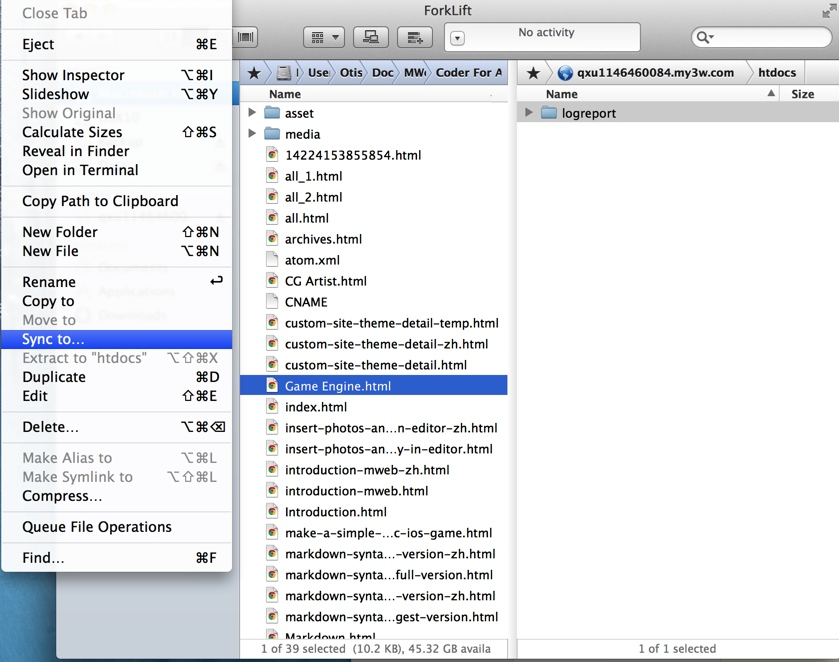
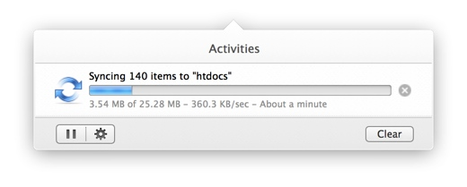
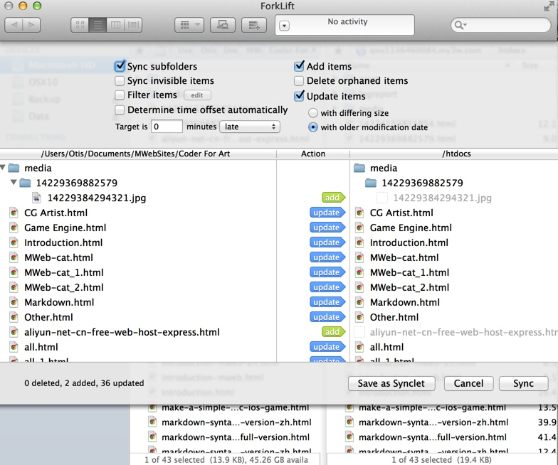
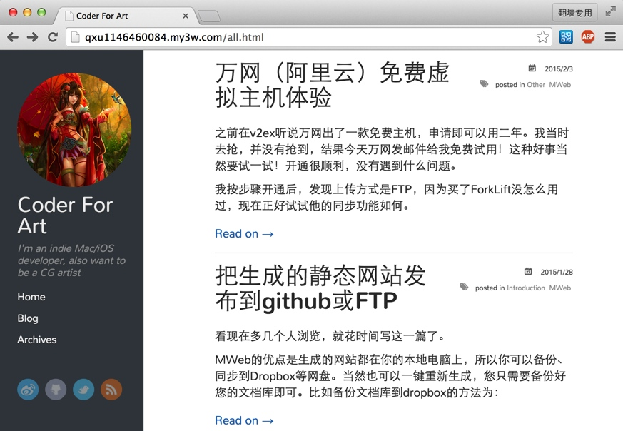

之前在v2ex听说万网出了一款免费主机，申请即可以用二年。我当时去抢，并没有抢到，结果今天万网发邮件给我免费试用！这种好事当然要试一试！开通很顺利，没有遇到什么问题。
我按步骤开通后，发现上传方式是FTP，因为买了ForkLift没怎么用过，现在正好试试他的同步功能如何。
我是用MWeb生成的静态网站并上传试试如何的。下图左边是我本机的用MWeb生成的静态网站的所在文件夹，然后右边是连上所给的FTP后，转到htdocs文件夹，在ForkLift中选择File-->Sync to...

上传速度一般，我的宽带是电信20M。

上传后就可以去预览看看速度如何了。进去一看，发现是要用自己的FTP密码登录才可以看。也就是说不备案是不能给别人看的，必须备案才可以。
浏览一下图很多的页面。速度还可以，比放在github快很多！
然后试试更新文章，看看ForkLift是否会自动同步！
因为我现在是新写了一文章，所以在MWeb中 Build site 然后看看ForkLift会不会侦测到文件改变，然后自动同步更新到FTP。
可惜的是：ForkLift不会自动同步，还是要你去点File-->Sync to...才可以。如图，他会找出那些文档有改动，然后点Sync，才会更新到FTP。

下图是上传后预览的结果：

有看到过v2ex上有朋友说备案也不大麻烦，弄好资料差不多五天就可以了。我当然不会将coderforart网站放到万网，所以肯定是不会去备案的。然后总的来说，万网的免费主机还是不错的，免费二年、速度也还行、备案也不麻烦。当然PHP和Mysql的功能我没去试，感觉免费主机还是应该只放静态HTML就好。
MWeb用FTP的体验比github好很多，只要生成然后用FTP同步即可，非常简单，我想我开发MWeb的目的应该是达到了。虽然MWeb现在非常少人用，但是我还是会继续优化MWeb，让它能更简单。